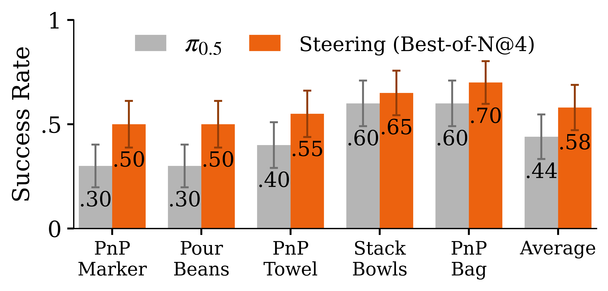

(i) Fidelity
Physically accurate predictions that correlate with reality;
WEAVER generates multiple views used by
modern visuomotor policies.

WEAVER is an action-conditioned latent world model for
long-horizon robot manipulation. It predicts future latent states,
decodes future observations when needed, and plans in latent space.
The key design decisions are:
Architecture and design. WEAVER
predicts multiple views and robot proprioceptive state. The
sparse long-term memory preserves scene context across occlusions,
short-term history captures recent motion, and an efficient
spatio-temporal Transformer generates future latents conditioned
on the action tokens.
Training and fast inference. The latent dynamics model is trained with flow matching and Diffusion Forcing, which supports consistent long-horizon prediction with different noise levels across future steps. At inference time, KV caching and rectified-flow post-training reduce the cost for planning.
Accurate reward and value estimation. To
efficiently score action chunks without decoding latents into
images or querying an external VLM judge, WEAVER
uses a lightweight reward head that operates directly on imagined
latent states and the language instruction. A critic estimates
returns beyond the imagined horizon.
WEAVER achieves better performance than Ctrl-World on DROID
validation and out-of-distribution (OOD) task data while using significantly lower inference time.
As we decrease the number of function evaluations (NFE) to reduce
latency, Ctrl-World's quality decreases more significantly than
WEAVER; both models incur the highest error when
predicting wrist-camera viewpoints.

WEAVER's latent reward is trained to match RoboMeter's task progress rewards.
On OOD real trajectories, the distilled reward model can distinguish action chunks using the
predicted advantage. We observe that the segment with highest-advantage action sample corresponds
to the best imagined outcome.

By jointly satisfying fidelity, consistency, and efficiency,
WEAVER supports three downstream world-model applications:
policy evaluation, policy improvement, and test-time planning.
To evaluate a policy offline, we execute recorded real-world action
trajectories open-loop inside WEAVER and record the
predicted rewards along the imagined rollout. This tests whether
the world model can track long-horizon outcomes that may require
many iterative latent-dynamics evaluations.

WEAVER model correlate more closely
with real-world policy performance.
For policy improvement, WEAVER samples candidate
action chunks, simulates their long-horizon outcomes, and computes
an imagined advantage using the latent reward and critic heads. Only
high-advantage rollouts are distilled back into the base policy,
avoiding updates from plans predicted to be worse than the current
behavior.

WEAVER yields the strongest success rates.
At test time, WEAVER performs a single-chunk
best-of-N search: it samples multiple candidate action chunks,
imagines their outcomes for one planning step, and executes the
action with the highest predicted advantage. Fast latent dynamics
and latent reward scoring make this practical without external VLM
judging.

Paper and arXiv links will be added when public.
The implementation is available at github.com/arnavkj1995/WEAVER.
Dataset, checkpoints, and evaluation artifacts will be linked here.
@article{jain2026weaver,
title={WEAVER, Better, Faster, Longer: An Effective World Model for Robotic Manipulation},
author={Jain, Arnav Kumar and Wu, Yilin and Farebrother, Jesse and Swamy, Gokul and Bajcsy, Andrea},
year={2026}
}